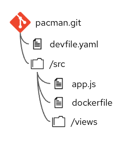
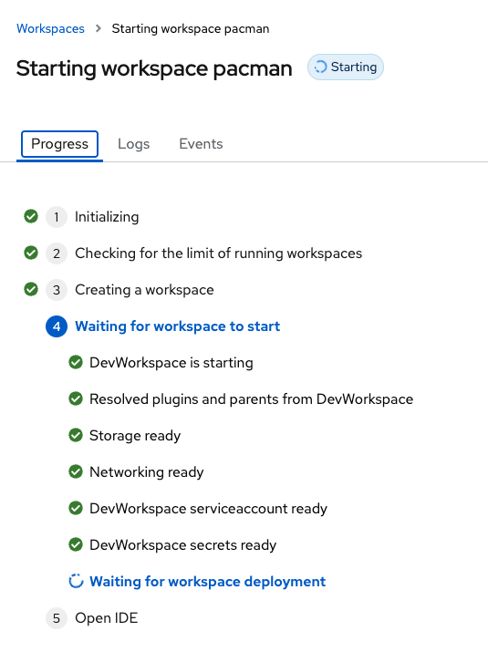
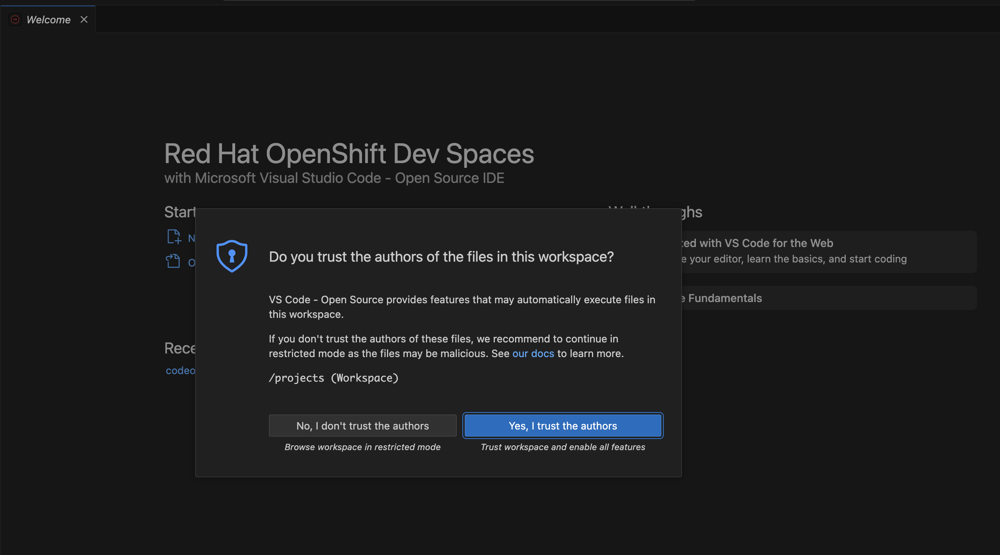
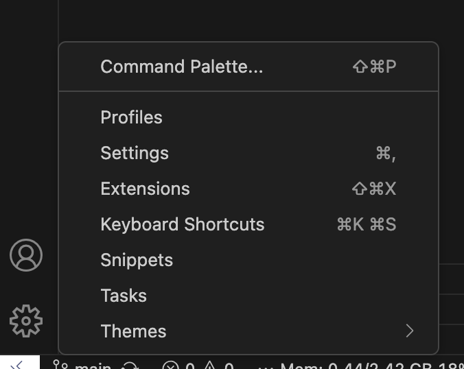
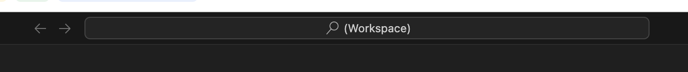
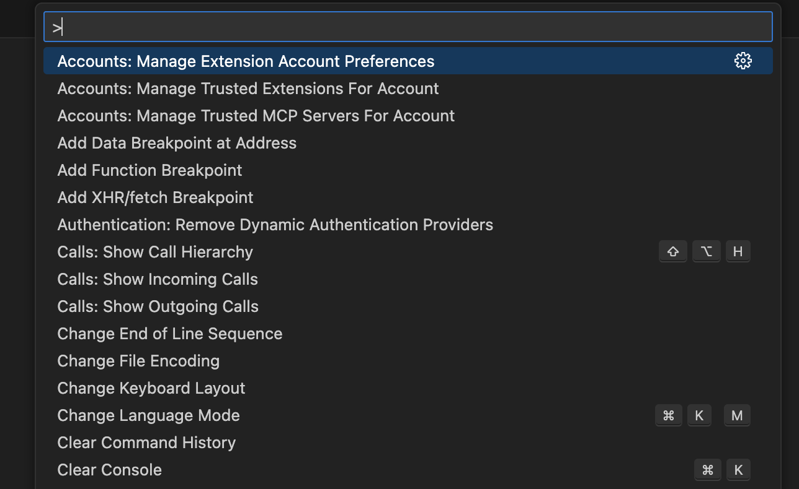
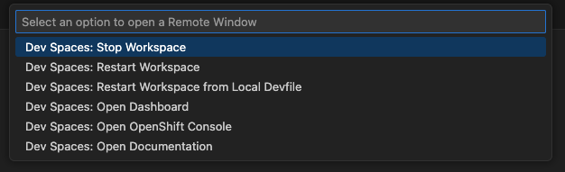
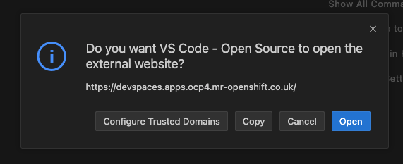
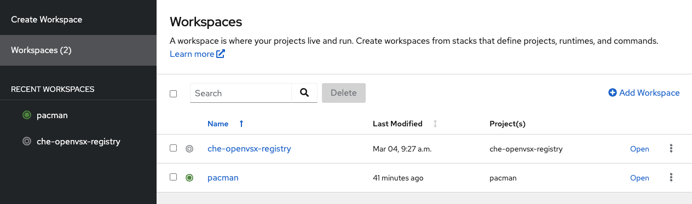

Using an existing Devfile
In the previous section it was stated that the ideal location for a devfile is a git repository. An example repository that contains a devfile in the root of the repository is : https://github.com/marrober/pacman.git.
In this section you will experience launching a workspace from pasting the URL into the DevSpaces user interface. You will also explore some of the elements of the workspace. In the next section you will launch the workspace in a different way and will experience the code development process.

To use the above devfile it is possible to simple go to the DevSpaces web UI and paste the URL for the git repository given above.
Launch Dev Spaces
There are two methods for launching DevSpaces
Get the DevSpaces URL from a route
A URL made available as a route from the OpenShift Cluster. The URL can be found from executing the following command, which assumes that Dev Spaces has been installed in a namespace 'devspaces'. If this is not the case adjust the -n parameter below.
oc get route/devspaces -n devspaces -o jsonpath='{"https://"}{.spec.host}'For the cluster that you are using right now the above command should show a result of :
https://devspaces.%CLUSTER_SUBDOMAIN%/|
The URL above can be put into a global load balancer alongside DevSpaces URLs from other OpenShift cluster instances. This will enable a load balancer to distribute users across a number of OpenShift clusters for DevSpaces access which is recommended when the number of users exceeds 1000. |

Creating a workspace
After the DevSpaced web UI has launched you need to create a workspace. Select the 'add workspace' button on the screen shown below.

Copy the URL below and paste it into the field 'Git repo URL', after clicking the 'add workspace' button.
https://github.com/marrober/pacman.gitAs the workspace starts the progress is displayed as shown below. Log and event tabs are also available for tracking the progress in more detail.

As soon as the workspace has loaded the display will change to be similar to that which is shown below. You are promoted to trust the author of the content being cloned into the workspace. Generally you will be cloning trusted content from you organisations' repositories so you can expect to say yes to this if it is internal content.

The welcome screen gives information and links. This page can be dismissed in the same manner as closing a file in VS Code.
Browsing the workspace
Take a look at the following areas of the workspace :
-
Left hand side menu (top) - The file browser, file search, source code integration, debug and test, Extensions
-
The explorer view next the icon menu on the left - This has options to display the file tree, file outline, SCM timeline and endpoints. The explorer view has three dots on the right hand side that can be used to switch off some of these views if they are not required.
-
The bottom toolbar - This shows the current SCM branch, which can be clicked to change the branch or create a new branch. This area also shows the current memory and cpu consumption of the workspace including the percentage of memory being used compared to the limit. Clicking on the resource consumption text gives a pop-up window at the top of the workspace showing the breakdown of cpu and memory consumption for the different container images in the workspace.
-
The left hand side white corner - This gives you access to a number of options for workspace management without having to go back to the DevSpaces UI screen. When you press the white corner you will get a pop-up menu in the toolbar at the top of the screen giving the following options :
-
Stop workspace
-
Restart workspace
-
Restart workspace from local devFile - When this option is selected you are promoted to select a devfile from the files loaded in the workspace. Don’t be confused that 'local' means your local laptop, local means the content within the workspace.
-
Open dashboard
-
Open OpenShift console
-
Open documentation
-

-
Left hand side menu (bottom) - Just above the white corner is the cog icon for access to :
-
Command palette
-
Profiles
-
Settings
-
Extensions
-
Keyboard shortcuts
-
Snippets
-
Tasks
-
Themes
-
The command palette
The command palette results in a menu of commands being displayed in the top central window as shown below

The command palette can also be displayed simply by clicking on the workspace search function at the top centre of the screen shown below.

As soon as you click into the workspace search field you will see a list of commonly used options. Press the '>' greater than character to see a full list of all available commands as shown below. There are a lot of items in the list so it scrolls to show all options.

Some of the entries above have a keyboard shortcut to get to the popular items quickly. The top item (highlighted in dark blue) has a settings wheel next to it which can be used to assign a keyboard shortcut to any of the items in the list.
Delete the workspace
Delete the workspace ready to recreate it in the next chapter.
Click on the left hand side white corner area of the DevSpaces workspace described above and shown in the a prior screen image. The top menu will show a number of options as indicated below.

Select the option 'Dev Spaces: Open Dashboard'
This will display an external website trust warning as shown below. Click 'Open' to accept that the website is OK. When working on your production implementation it is worth clicking the 'Configure Trust Domains' so that you don’t get the warning again.

A new browser tab will launch listing all workspaces that you have. A green dot next to a workspace indicates that it is running, as shown below.

Click on the three dots to the right of your workspace. From here you can:
-
Open a workspace
-
Open a workspace in debug mode
-
Start a workspace in background (The difference between open and start is that 'open' will launch the workspace and take you to it in a new tab, while 'start' will start the workspace running but does not take you to it in a new tab).
-
Restart a workspace
-
Stop a workspace
-
Delete a workspace
-
View workspace details
Click on the 'delete' option and accept the notification that you 'understand that it cannot be reverted' once delete.